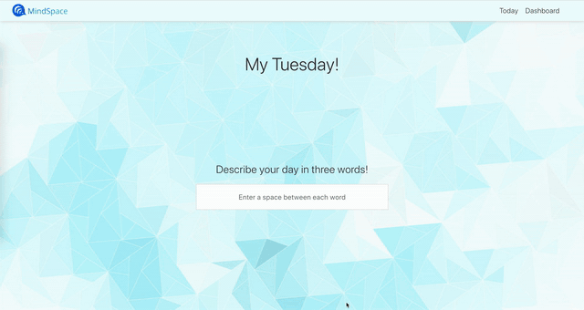
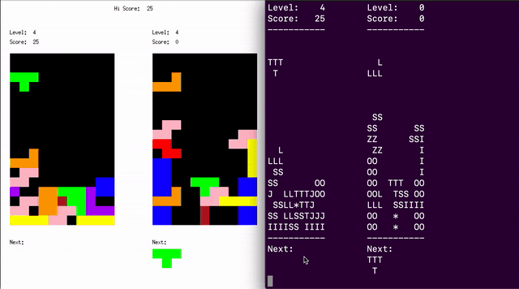
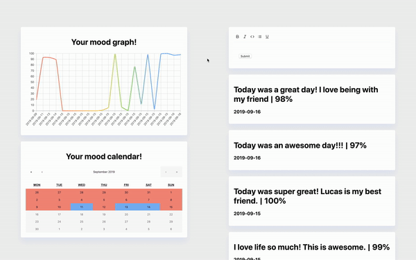
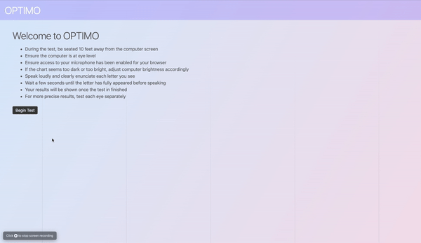

- Co-developed a simple workspace tool to improve self-reflection, stress-related conflicts and more
- Implemented Shutterstock's API to retrieve the keyword images
- Led user-interface design and front-end development of the application
- Utilize Design Thinking process to build an innovative product
University of Waterloo - CS246

- Co-developed the Tetris game with additional features
- Implemented the program utilizing object-oriented programming patterns in C++
- Final project for the University of Waterloo CS246 course
- Scored 103% on the assignment

- Co-developed a smart diary that gives users data-driven insights into their mental well being
- Implemented machine learning sentimental analysis to track journal entries
- Spearheaded the front-end development of the application

- Won best pitch award out of over 500 participants at StarterHacks 2019; Major League Hacking competition
- Developed a dynamic web application utilizing HTML, CSS and JavaScript that accurately determines the user’s eyesight
- Implemented a Web Speech API using JavaScript to create an algorithm that operates using voice input
- Adapted results from optometric research to increase algorithm’s accuracy
University of Waterloo - SCI206
- Term project for the course
- Scored 110% by exceeding my professor's expectations
- Explained a complex physics concept using an original method to be easily understood